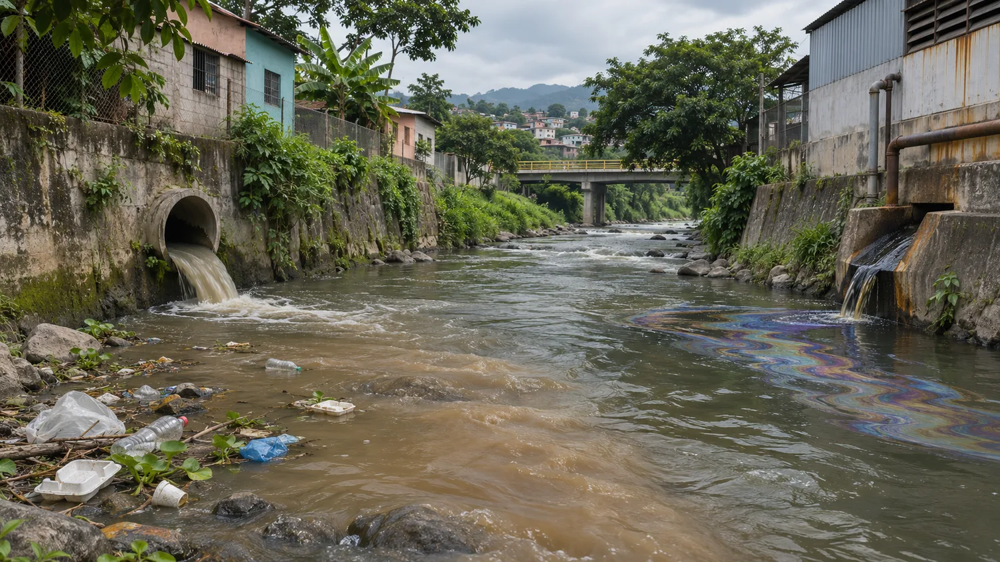
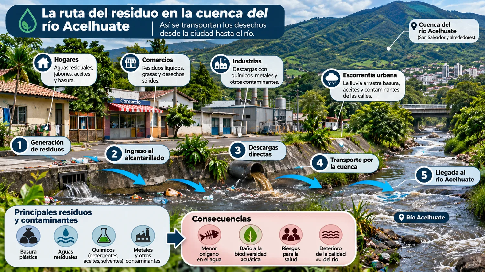

Física
Modifica turbidez, color, temperatura y cantidad de partículas o sedimentos.
Diagnóstico ambiental
La contaminación no equivale solamente a residuos visibles. Evaluarla exige relacionar observación, muestreo, análisis de laboratorio, territorio y tiempo.
Formas de contaminación
Una muestra clara no está necesariamente libre de microorganismos o sustancias químicas. Una descarga oscura o espumosa tampoco identifica por sí sola su composición.
Modifica turbidez, color, temperatura y cantidad de partículas o sedimentos.
Puede incluir nutrientes, detergentes, grasas, hidrocarburos o metales, según la fuente.
Se relaciona con microorganismos e indicadores de contaminación fecal.

Inventario ASA · 2025
El inventario presentado en 2025 registró 2,254 descargas en el área estudiada. La categoría más frecuente no es automáticamente la que aporta mayor carga contaminante.

Evidencia con contexto
Documento sobre evaluación de calidad del agua y alternativas para la descontaminación. Debe citarse como antecedente histórico.
Estudios sobre la situación ambiental de la subcuenca y recomendaciones de intervención.
ASA y AECID, con colaboración del MARN, presentaron un plan para el Matalapa y parte del Acelhuate. El anuncio no significa que todas las obras estén terminadas.
Este portal organiza información documental; no presenta mediciones propias de laboratorio.

Interpretar con cuidado
Significa que sus resultados describen el territorio y el tramo estudiados. No deben generalizarse automáticamente a toda la subcuenca ni a cualquier año.
La investigación rigurosa distingue entre observación, inferencia y dato medido. También reconoce incertidumbres y evita atribuir contaminantes o enfermedades sin evidencia específica.
Consultar el mapa narrativo ↗